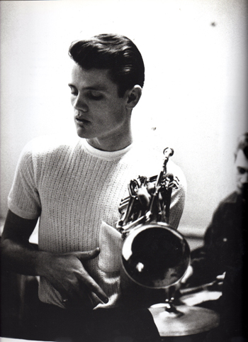

Profile

Chet Baker
1929년 12월 23일 미국 출생
미국의 재즈 트럼펫 주자 겸 가수.
느슨하고 낭만적이면서도 울적한 트럼펫 연주와 노래,
그리고 엄청난 막장 인생으로 유명하다.
웨스트 코스트 재즈의 명인이자 쿨 재즈를 대표하는
전설적인 음악가 중 한 명이다.
Chesney Henry "Chet" Baker Jr. (December 23, 1929 – May 13, 1988)
was an American jazz trumpeter and vocalist.
He is known for major innovations within the cool
jazz subgenre leading him to be nicknamed the "prince of cool"